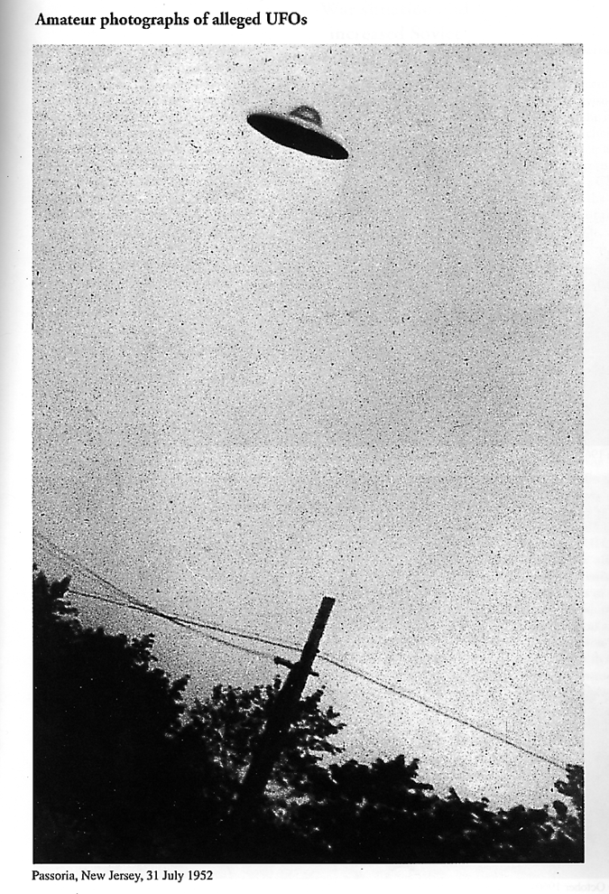

AliensWiki
Everything about Aliens
In popular culture, the term UFO or unidentified
flying object-refers to a suspected alien spacecraft,
although its definition encompasses any unexplained aerial
phenomena. UFO sightings have been reported throughout
recorded history and in various parts of the world,
raising questions about life on other planets and whether
extraterrestrials have visited Earth. They became a major
subject of interest-and the inspiration behind numerous films
and books-following the development of rocketry after World War II.
Flying Saucers
The first well-known UFO sighting occurred in 1947,
when businessman Kenneth Arnold claimed to see a group
of nine high-speed objects near Mount Rainier in Washington
while flying his small plane. Arnold estimated the speed of
the crescent-shaped objects as several thousand miles per
hour and said they moved “like saucers skipping on water.”
In the newspaper report that followed, it was mistakenly
stated that the objects were saucer-shaped, hence the term
flying saucer.
The Roswell UFO Incident
The same year that Arnold saw the
flying objects, rancher W.W. “Mac” Brazel
came across a mysterious 200-yard long wreckage
near an Army airfield in Roswell, New Mexico.
Local papers reported it was the remains of a flying
saucer. The U.S. military issued a statement saying that
it was just a weather balloon, though the newspaper
photograph suggested otherwise.
The flames of conspiracy were further fanned in the 1950s,
when dummies with latex “skin” and aluminum “bones” that
looked eerily like aliens fell from the sky across New Mexico
and were hurriedly picked up by military vehicles. To those
who believed in the earlier Roswell sightings, this seemed
like a government cover-up. For the Air Force, these
“dummy drops” were a way to test new ways for pilots to
survive falls.
Fifty years later, the military issued a subsequent statement
admitting that the Roswell wreckage was part of Project Mogul,
a top-secret atomic espionage project.
Project Blue Book
Sightings of unidentified aerial
phenomena increased, and in 1948 the U.S.
Air Force began an investigation of these reports
called Project Sign. Cold War tension was mounting,
and the initial opinion of those involved with the
project was that the UFOs were most likely sophisticated
Soviet aircraft, although some researchers suggested that
they might be spacecraft from other worlds, the so-called
extraterrestrial hypothesis (ETH).
Within a year, Project Sign was succeeded by Project Grudge,
which in 1952 was itself replaced by the longest-lived of the
official inquiries into UFOs, Project Blue Book, headquartered
at Wright-Patterson Air Force Base in Dayton, Ohio. From 1952
to 1969 Project Blue Book compiled reports of more than 12,000
sightings or events, each of which was ultimately classified as
(1) “identified” with a known astronomical, atmospheric or
artificial (human-caused) phenomenon or (2) “unidentified.”
The latter category, approximately 6 percent of the total,
included cases for which there was insufficient information
to make an identification with a known phenomenon.
The Robertson Panel and the Condon Report
An American obsession with the UFO phenomenon was
under way. In the hot summer of 1952, a provocative
series of radar and visual sightings occurred near
National Airport in Washington, D.C. Although these
events were attributed to temperature inversions in the
air over the city, not everyone was convinced by this
explanation. Meanwhile, the number of UFO reports had
climbed to a record high.
This led the Central Intelligence Agency to prompt the U.S.
government to establish an expert panel of scientists to
investigate the phenomena. The panel was headed by H.P.
Robertson, a physicist at the California Institute of
Technology in Pasadena, Calif., and included other physicists,
an astronomer, and a rocket engineer. The Robertson Panel met
for three days in 1953 and interviewed military officers and
the head of Project Blue Book. They also reviewed films and
photographs of UFOs.
Their conclusions were that (1) 90 percent
of the sightings could be easily attributed to
astronomical and meteorological phenomena
(e.g., bright planets and stars, meteors, auroras,
ion clouds) or to such earthly objects as aircraft,
balloons, birds and searchlights; (2) there was no obvious
security threat; and (3) there was no evidence to support
the ETH. Parts of the panel's report were kept classified
until 1979, and this long period of secrecy helped fuel
suspicions of a government cover-up.
A second committee was set up in 1966
at the request of the Air Force to review
the most interesting material gathered by
Project Blue Book. Two years later this committee,
which made a detailed study of 59 UFO sightings,
released its results as Scientific Study of
Unidentified Flying Objects—also known as the
Condon Report, named for Edward U. Condon, the
physicist who headed the investigation. The Condon
Report was reviewed by a special committee of the
National Academy of Sciences. A total of 37 scientists
wrote chapters or parts of chapters for the report,
which covered investigations of the 59 UFO sightings in detail.
Like the Robertson Panel, the committee concluded
that there was no evidence of anything other than
commonplace phenomena in the reports and that UFOs
did not warrant further investigation. This, together
with a decline in sighting activity, led to the dismantling
of Project Blue Book in 1969.

Area 51
In the 1950s and 60s, multiple UFO sightings were reported
around Area 51 in Nevada, a site used variously by the CIA,
U.S. Air Force, and Lockheed Martin to test flights of
experimental aircraft, or “black aircraft.” Declassified
documents show Area 51 was home to a Cold War program called
Oxcart dedicated to creating a spy plane that would be
undetectable in the air and could be used to gather information
behind the Iron Curtain. The resulting SR-71 Blackbird, F-117
Nighthawk, and Archangel-12 (A-12) traveled at speeds upwards
of 2,000 miles an hour. These mysterious planes helped fuel
rumors that Area 51 was used to conduct experiments on
extraterrestrial life and their spacecraft.
Other investigations of UFOs
Despite the failure of the ETH to make headway
with the expert committees, a few scientists and
engineers, most notably J. Allen Hynek, an astronomer
at Northwestern University in Evanston, Ill.,
who had been involved with projects Sign, Grudge
and Blue Book, concluded that a small fraction of
the most-reliable UFO reports gave definite indications
for the presence of extraterrestrial visitors.
Hynek founded the Center for UFO Studies (CUFOS),
which continues to investigate the phenomenon.
Aside from Project Blue Book,
the only other official and fairly complete
records of UFO sightings were kept in Canada,
where they were transferred in 1968 from the
Canadian Department of National Defense to the
Canadian National Research Council. The Canadian
records comprised about 750 sightings. Less complete
records have been maintained in the United Kingdom,
Sweden, Denmark, Australia, and Greece.
In the United States, CUFOS and the Mutual UFO
Network in Bellvue, Colo., continue to log sightings
reported by the public.
In the Soviet Union, sightings of UFOs were often
prompted by tests of secret military rockets.
In order to obscure the true nature of the tests,
the government sometimes encouraged the public's belief
that these rockets might be extraterrestrial craft but
eventually decided that the descriptions themselves might
give away too much information. UFO sightings in China have
been similarly provoked by military activity that is
unknown to the public.
Why Aliens Matter
In the vast expanse of the universe, pondering the existence of aliens isn't just for scientists—
it's a journey that invites us all to imagine the extraordinary.Exploring the idea of extraterrestrial
life isn't just about science; it's about challenging what we think we know and broadening our horizons.
Beyond the excitement of potential discoveries lies a deeper impact on how we see life, evolution, and even
our own consciousness. Alien exploration connects us on a global scale, transcending borders and cultures, as
we collectively seek answers to the profound questions about our place in the cosmos. Embracing the idea of aliens
isn't just a dive into the unknown; it's an invitation to appreciate the sheer vastness of the universe and find a
sense of awe and unity in our shared cosmic journey on this pale blue dot.